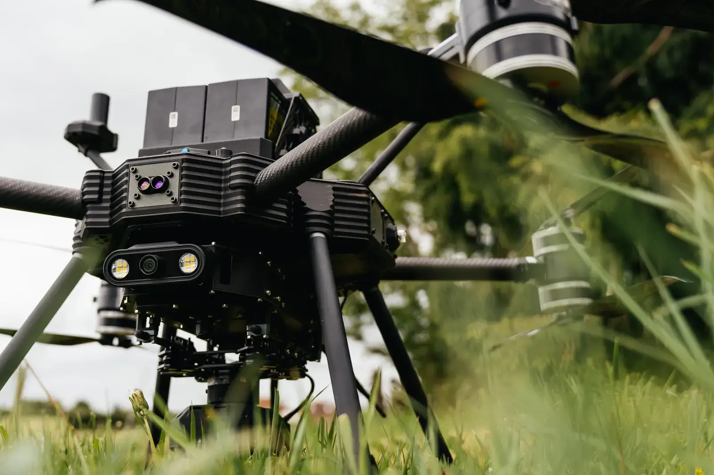
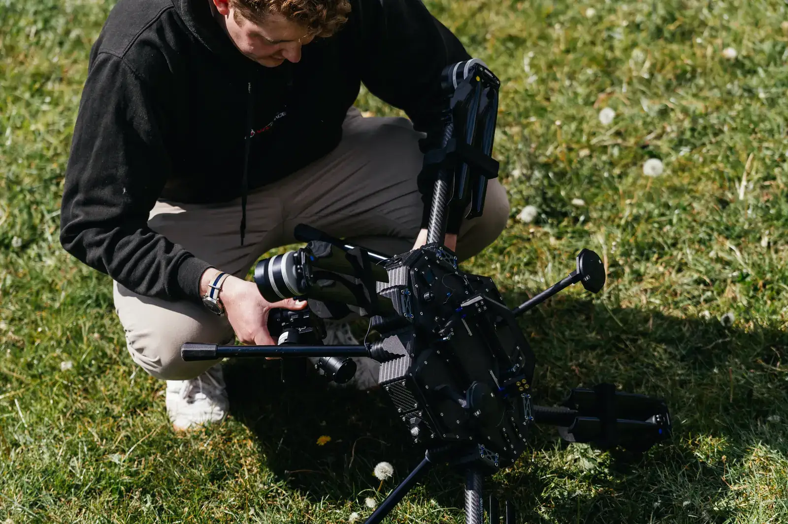
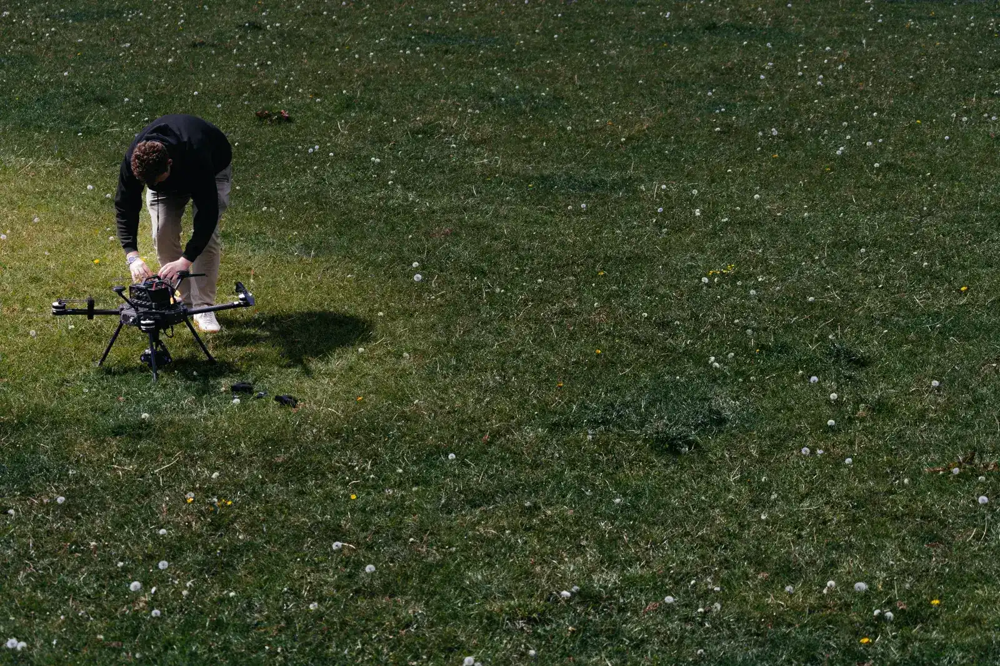
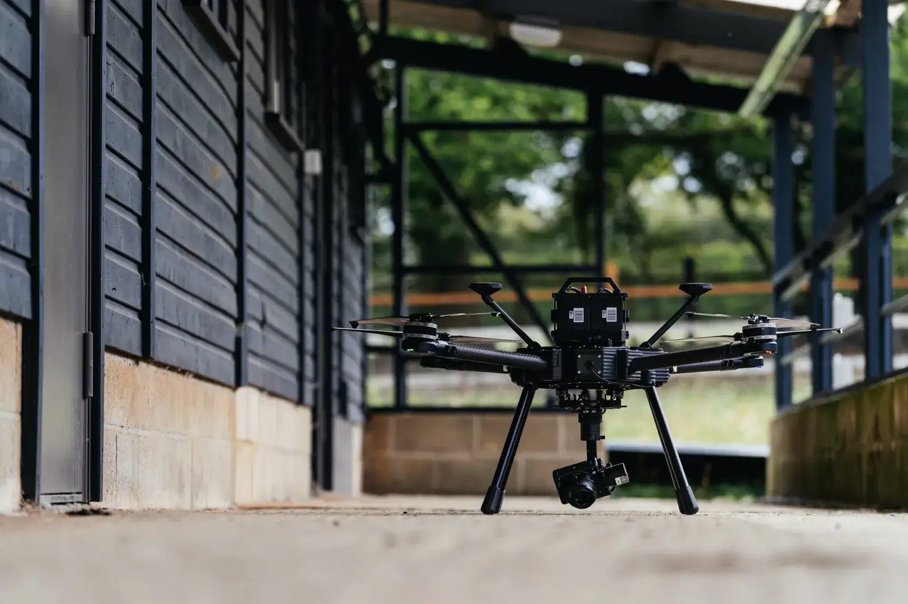
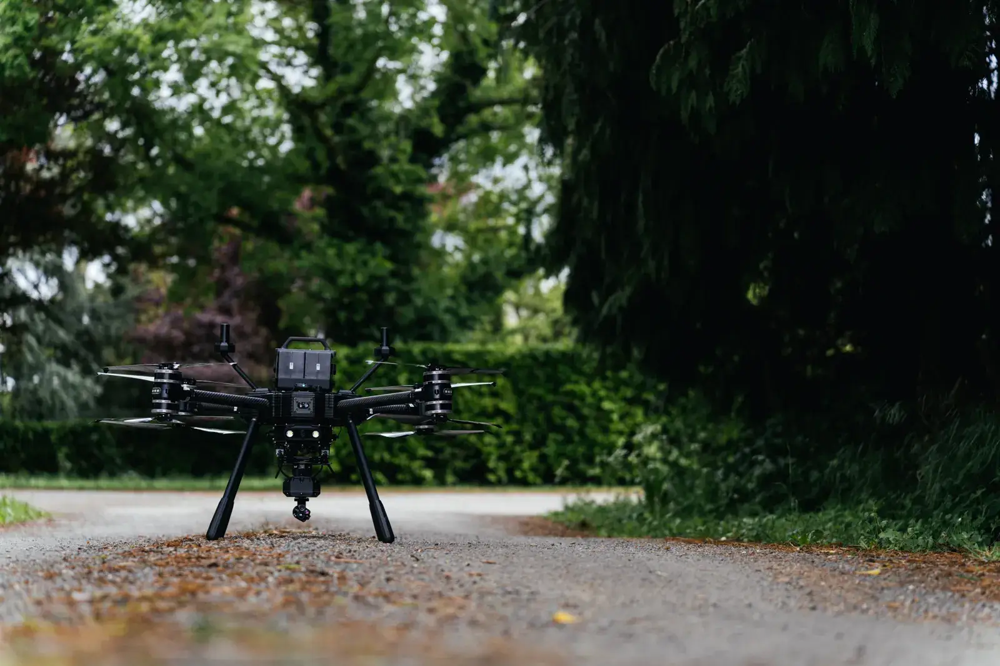

ISS Aerospace
A UK designer and manufacturer of uncrewed systems with a decade of delivery for the Ministry of Defence, Dstl, AWE, the NDA, BAE Systems, Airbus and Babcock. Its systems monitor sensitive nuclear infrastructure autonomously.
SAFE Swarm Autonomy Flight Environment
SAFE by ISS Aerospace is software in development, designed to allow one operator to supervise a team of drones and ground robots on patrol, search, survey, inspection and delivery. If one vehicle develops a fault or loses GPS, another will take over its task.
Live trials from 2027 Designed for ports, utilities, councils, emergency services and distribution sites.
A UK designer and manufacturer of uncrewed systems with a decade of delivery for the Ministry of Defence, Dstl, AWE, the NDA, BAE Systems, Airbus and Babcock. Its systems monitor sensitive nuclear infrastructure autonomously.
The CRANE laboratory, Cooperative Robotics and Autonomous Networks, carries out the research.
The UK's national innovation agency funds the programme as a Knowledge Transfer Partnership. The scheme has moved university expertise into UK industry for close to fifty years.


Each extra patrol, search or inspection route needs more people on shift.
The task waits until the team can come back another day.
Drones lose their position near structures and cannot use it inside them.
Each new type of flight needs its own safety case before it can start.
How SAFE is designed to work
SAFE is designed to run patrol, search, tracking and logistics with one team of aircraft and ground robots. When a vehicle develops a fault, another vehicle will take over its task.
Patrol
This is an illustration of how SAFE is designed to operate.

Your trial will measure coverage, staff hours and return visits on your site against your current method, and you will receive the results for your business case.
One operator will supervise several vehicles, so coverage no longer depends on crew numbers.
The Civil Aviation Authority allows one pilot to be responsible for several aircraft when the operator shows that the workload is safe. SAFE is designed to record that evidence.
Routine checks at height, along fences and inside structures will be carried out by vehicles.
Personnel attend when a person is required.
After a fault or a loss of GPS, the task will transfer to another vehicle.
Fewer return visits will be required.
Each task will record which vehicle performed it, when, and what it found.
Available when the board or an auditor requests it.
Each task is designed to run on the same software. The vehicles, the site model and the mission plan are configured for the customer's site.
When an alarm is raised, the control room must decide whether to send a guard. SAFE is designed to send the nearest suitable vehicle to the alarm point and show its camera view in your control room. The rest of the team continues the patrol.
Fences, roofs, plant and pipework are often inspected less frequently than the operator intends, because each inspection requires a crew. SAFE is designed to allow one operator to assign a scheduled inspection route to the team and repeat the route after severe weather. Each route is designed to return a photograph of every inspection point with its time and position, so that changes can be compared from one visit to the next.
Satellite positioning is unreliable beside steel structures and unavailable inside buildings. SAFE vehicles are designed to navigate with cameras, and lidar where required, and to share a single map, so that one mission can survey both the open site and the interior of its structures.
A search over open ground, coastline or flooded land is limited by the area a small crew can cover. SAFE is designed to give each vehicle its own sector. If a vehicle withdraws, its sector will pass to another vehicle, so that no ground is left unsearched.
Moving parts, samples and equipment across a large site occupies staff and vehicles for short journeys. SAFE is designed to assign a delivery to a free aircraft, which lifts the load, sets it down at the drop point and returns to its patrol.
Ports and harbours, energy and utilities, defence and nuclear sites, transport, emergency services and large estates.
Vehicle makers will be able to add team operation and safety evidence to their own aircraft and ground robots under licence.

Approval is a common cause of delay in drone programmes. SAFE is being developed to produce the safety evidence that supports an operator's approval.
SAFE is designed around UK SORA, the Civil Aviation Authority's route for flights beyond visual line of sight (BVLOS) since April 2025.
The Civil Aviation Authority allows one pilot to be responsible for several aircraft when the operator shows that the workload is safe. SAFE is designed to record that evidence.
Before any flight, you will agree with ISS what each vehicle does if it develops a fault.
Every behaviour will be tested in a simulated copy of the site before a vehicle operates there.
Rain and wind limits will be set for each trial site and agreed with your team before the first flight.
For the trial, ISS will prepare the flight approvals and safety documentation with your team.
Each operator remains responsible for its own approval. SAFE is designed to support the application.
When one vehicle stops, the mission is designed to continue.
3
types of vehicle on one task list
1
operator supervising the fleet
2027
live trials begin on UK sites
Trials are open to any suitable site with a defined task. Sites selected at this stage will help to choose the first tasks SAFE is developed to perform.
One task on your site is selected with your team, and the trial is designed around it.
Your site is modelled before any vehicle arrives, and you receive the results of every test in the model.
Trial sites will receive first access when the programme ends in July 2028.
Participation in the trial is free of charge.
Use cases selected with operators
Model of your site and tests in it
Trials, first with one vehicle, then with the team
Programme ends, and trial sites receive first access

Describe your site and the first task you would assign to SAFE. We will arrange an introductory meeting to understand your site and its requirements.
For any site with a defined task.
For operators, site leads and prospective customers. Contribute to the selection of the first applications.
A video of the site model and a quarterly update.
ISS Aerospace has delivered uncrewed systems for the Ministry of Defence, Dstl, AWE and the NDA for a decade.